Lower Probabilities¶
- class improb.lowprev.lowprob.LowProb(pspace=None, mapping=None, lprev=None, uprev=None, prev=None, lprob=None, uprob=None, prob=None, bba=None, credalset=None, number_type=None)¶
Bases: improb.lowprev.lowpoly.LowPoly
An unconditional lower probability. This class is identical to LowPoly, except that only unconditional assessments on events are allowed.
>>> print(LowProb(3, lprob={(0, 1): '0.1', (1, 2): '0.2'})) 0 1 : 1/10 1 2 : 1/5 >>> print(LowProb(3, lprev={(3, 1, 0): 1})) Traceback (most recent call last): ... ValueError: not an indicator gamble >>> print(LowProb(3, uprob={(0, 1): '0.1'})) Traceback (most recent call last): ... ValueError: cannot specify upper prevision >>> print(LowProb(3, mapping={((3, 1, 0), (0, 1)): (1.4, None)})) Traceback (most recent call last): ... ValueError: not unconditional >>> lpr = LowProb(3, lprob={(0, 1): '0.1', (1, 2): '0.2', (2,): '0.05'}) >>> lpr.extend() >>> print(lpr) : 0 0 : 0 1 : 0 2 : 1/20 0 1 : 1/10 0 2 : 1/20 1 2 : 1/5 0 1 2 : 1 >>> print(lpr.mobius) : 0 0 : 0 1 : 0 2 : 1/20 0 1 : 1/10 0 2 : 0 1 2 : 3/20 0 1 2 : 7/10 >>> lpr = LowProb(3, lprob={(0, 1): '0.1', (1, 2): '0.2', (2,): '0.05'}) >>> lpr.extend([(lpr.pspace.make_event((0, 2)), True)]) >>> print(lpr) 2 : 1/20 0 1 : 1/10 0 2 : 1/20 1 2 : 1/5
- classmethod get_constraints_n_monotone(pspace, monotonicity=None)¶
Yields constraints for lower probabilities with given monotonicity.
Parameters: - pspace (list or similar; see Possibility Spaces) – The possibility space.
- monotonicity (int or collections.Iterable of int) – Requested level of monotonicity (see notes below for details).
As described in get_constraints_bba_n_monotone(), the n-monotonicity constraints on basic belief assignment are:
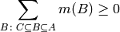
for all
 , with
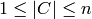.
, with
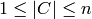.By the Mobius transform, this is equivalent to:
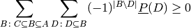
Once noted that
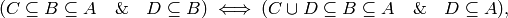
we can conveniently rewrite the sum as:
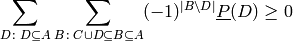
This implementation iterates over all 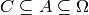, with 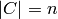, and yields each constraint as an iterable of (event, coefficient) pairs, where zero coefficients are omitted.
Note
As just mentioned, this method returns the constraints corresponding to the latter equation for equal to monotonicity. To get all the constraints for n-monotonicity, call this method with monotonicity=xrange(1, n + 1).
The rationale for this approach is that, in case you already know that (n-1)-monotonicity is satisfied, then you only need the constraints for monotonicity=n to check for n-monotonicity.
Note
The trivial constraints that the empty set must have lower probability zero, and that the possibility space must have lower probability one, are not included: so for monotonicity=0 this method returns an empty iterator.
>>> pspace = PSpace("abc") >>> for mono in xrange(1, len(pspace) + 1): ... print("{0} monotonicity:".format(mono)) ... print(" ".join("{0:<{1}}".format("".join(i for i in event), len(pspace)) ... for event in pspace.subsets())) ... constraints = [ ... dict(constraint) for constraint in ... LowProb.get_constraints_n_monotone(pspace, mono)] ... constraints = [ ... [constraint.get(event, 0) for event in pspace.subsets()] ... for constraint in constraints] ... for constraint in sorted(constraints): ... print(" ".join("{0:<{1}}".format(value, len(pspace)) ... for value in constraint)) 1 monotonicity: a b c ab ac bc abc -1 0 0 1 0 0 0 0 -1 0 1 0 0 0 0 0 -1 1 0 0 0 0 0 0 0 -1 0 0 0 1 0 0 0 -1 0 0 1 0 0 0 0 0 -1 0 0 0 1 0 0 0 -1 0 1 0 0 0 0 0 0 -1 0 0 1 0 0 0 0 -1 0 1 0 0 0 0 0 0 -1 0 0 1 0 0 0 0 0 -1 0 1 0 0 0 0 0 0 -1 1 2 monotonicity: a b c ab ac bc abc 0 0 0 1 0 -1 -1 1 0 0 1 0 -1 0 -1 1 0 1 0 0 -1 -1 0 1 1 -1 -1 0 1 0 0 0 1 -1 0 -1 0 1 0 0 1 0 -1 -1 0 0 1 0 3 monotonicity: a b c ab ac bc abc -1 1 1 1 -1 -1 -1 1
- get_imprecise_part()¶
Extract the imprecise part and its relative weight.
Every coherent lower probability 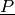 can be written as a unique convex mixture 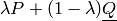 of an additive ‘precise’ part
 and an ‘imprecise’ part
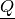 that is zero on singletons.
We return the tuple 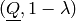.
and an ‘imprecise’ part
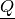 that is zero on singletons.
We return the tuple 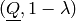.>>> pspace = PSpace('abc') >>> lprob = LowProb(pspace, ... lprob={'a': '1/8', 'b': '1/7', 'c': '1/6'}, ... number_type='fraction') >>> print(lprob) a : 1/8 b : 1/7 c : 1/6 >>> lprob.extend() >>> print(lprob) : 0 a : 1/8 b : 1/7 c : 1/6 a b : 15/56 a c : 7/24 b c : 13/42 a b c : 1 >>> lprob.set_lower(Event(pspace, 'ac'), '1/3') >>> prob, coeff = lprob.get_precise_part() >>> print(prob) a : 21/73 b : 24/73 c : 28/73 >>> print(coeff) 73/168 >>> improb, cocoeff = lprob.get_imprecise_part() >>> print(cocoeff) 95/168 >>> print(improb) : 0 a : 0 b : 0 c : 0 a b : 0 a c : 7/95 b c : 0 a b c : 1 >>> coeff + cocoeff == 1 True
Warning
The lower probability must be defined for all singletons. If needed, call extend() first.
- get_outer_approx(algorithm=None)¶
Generate an outer approximation.
Parameters: algorithm – a string denoting the algorithm used: None, 'linvac', 'irm', 'imrm', or 'lpbelfunc' Return type: LowProb This method replaces the lower probability by a lower probability 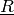 determined by the algorithm argument:
- None
returns the original lower probability.
>>> pspace = PSpace('abc') >>> lprob = LowProb(pspace, ... lprob={'ab': .5, 'ac': .5, 'bc': .5}, ... number_type='fraction') >>> lprob.extend() >>> print(lprob) : 0 a : 0 b : 0 c : 0 a b : 1/2 a c : 1/2 b c : 1/2 a b c : 1 >>> lprob == lprob.get_outer_approx() True
- 'linvac'
- replaces the imprecise part by the vacuous lower probability 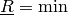 to generate a simple outer approximation.
- 'irm'
replaces by a completely monotone lower probability that is obtained by using the IRM algorithm of Hall & Lawry [1]. The Moebius transform of a lower probability that is not completely monotone contains negative belief assignments. Consider such a lower probability and an event with such a negative belief assignment. The approximation consists of removing this negative assignment and compensating for this by correspondingly reducing the positive masses for events below it; for details, see the paper.
The following example illustrates the procedure:
>>> pspace = PSpace('abc') >>> lprob = LowProb(pspace, ... lprob={'ab': .5, 'ac': .5, 'bc': .5}, ... number_type='fraction') >>> lprob.extend() >>> print(lprob) : 0 a : 0 b : 0 c : 0 a b : 1/2 a c : 1/2 b c : 1/2 a b c : 1 >>> lprob.is_completely_monotone() False >>> print(lprob.mobius) : 0 a : 0 b : 0 c : 0 a b : 1/2 a c : 1/2 b c : 1/2 a b c : -1/2 >>> belfunc = lprob.get_outer_approx('irm') >>> print(belfunc.mobius) : 0 a : 0 b : 0 c : 0 a b : 1/3 a c : 1/3 b c : 1/3 a b c : 0 >>> print(belfunc) : 0 a : 0 b : 0 c : 0 a b : 1/3 a c : 1/3 b c : 1/3 a b c : 1 >>> belfunc.is_completely_monotone() True
The next is Example 2 from Hall & Lawry’s 2004 paper [1]:
>>> pspace = PSpace('ABCD') >>> lprob = LowProb(pspace, lprob={'': 0, 'ABCD': 1, ... 'A': .0895, 'B': .2743, ... 'C': .2668, 'D': .1063, ... 'AB': .3947, 'AC': .4506, ... 'AD': .2959, 'BC': .5837, ... 'BD': .4835, 'CD': .4079, ... 'ABC': .7248, 'ABD': .6224, ... 'ACD': .6072, 'BCD': .7502}) >>> lprob.is_avoiding_sure_loss() True >>> lprob.is_coherent() False >>> lprob.is_completely_monotone() False >>> belfunc = lprob.get_outer_approx('irm') >>> belfunc.is_completely_monotone() True >>> print(lprob) : 0.0 A : 0.0895 B : 0.2743 C : 0.2668 D : 0.1063 A B : 0.3947 A C : 0.4506 A D : 0.2959 B C : 0.5837 B D : 0.4835 C D : 0.4079 A B C : 0.7248 A B D : 0.6224 A C D : 0.6072 B C D : 0.7502 A B C D : 1.0 >>> print(belfunc) : 0.0 A : 0.0895 B : 0.2743 C : 0.2668 D : 0.1063 A B : 0.375789766751 A C : 0.405080300695 A D : 0.259553087227 B C : 0.560442004097 B D : 0.43812301076 C D : 0.399034985143 A B C : 0.710712071543 A B D : 0.603365864737 A C D : 0.601068373065 B C D : 0.7502 A B C D : 1.0 >>> print(lprob.mobius) : 0.0 A : 0.0895 B : 0.2743 C : 0.2668 D : 0.1063 A B : 0.0309 A C : 0.0943 A D : 0.1001 B C : 0.0426 B D : 0.1029 C D : 0.0348 A B C : -0.0736 A B D : -0.0816 A C D : -0.0846 B C D : -0.0775 A B C D : 0.1748 >>> print(belfunc.mobius) : 0.0 A : 0.0895 B : 0.2743 C : 0.2668 D : 0.1063 A B : 0.0119897667507 A C : 0.0487803006948 A D : 0.0637530872268 B C : 0.019342004097 B D : 0.0575230107598 C D : 0.0259349851432 A B C : 3.33066907388e-16 A B D : -1.11022302463e-16 A C D : -1.11022302463e-16 B C D : 0.0 A B C D : 0.0357768453276 >>> sum(lprev for (lprev, uprev) ... in (lprob - belfunc).itervalues())/(2 ** len(pspace)) 0.013595658498933991
Note
This algorithm is not invariant under permutation of the possibility space.
Warning
The lower probability must be defined for all events. If needed, call extend() first.
- 'imrm'
replaces by a completely monotone lower probability that is obtained by using an algorithm by Quaeghebeur that is as of yet unpublished.
We apply it to Example 2 from Hall & Lawry’s 2004 paper [1]:
>>> pspace = PSpace('ABCD') >>> lprob = LowProb(pspace, lprob={ ... '': 0, 'ABCD': 1, ... 'A': .0895, 'B': .2743, ... 'C': .2668, 'D': .1063, ... 'AB': .3947, 'AC': .4506, ... 'AD': .2959, 'BC': .5837, ... 'BD': .4835, 'CD': .4079, ... 'ABC': .7248, 'ABD': .6224, ... 'ACD': .6072, 'BCD': .7502}) >>> belfunc = lprob.get_outer_approx('imrm') >>> belfunc.is_completely_monotone() True >>> print(lprob) : 0.0 A : 0.0895 B : 0.2743 C : 0.2668 D : 0.1063 A B : 0.3947 A C : 0.4506 A D : 0.2959 B C : 0.5837 B D : 0.4835 C D : 0.4079 A B C : 0.7248 A B D : 0.6224 A C D : 0.6072 B C D : 0.7502 A B C D : 1.0 >>> print(belfunc) : 0.0 A : 0.0895 B : 0.2743 C : 0.2668 D : 0.1063 A B : 0.381007057096 A C : 0.411644226231 A D : 0.26007767078 B C : 0.562748716673 B D : 0.4404197271 C D : 0.394394926787 A B C : 0.7248 A B D : 0.6224 A C D : 0.6072 B C D : 0.7502 A B C D : 1.0 >>> print(lprob.mobius) : 0.0 A : 0.0895 B : 0.2743 C : 0.2668 D : 0.1063 A B : 0.0309 A C : 0.0943 A D : 0.1001 B C : 0.0426 B D : 0.1029 C D : 0.0348 A B C : -0.0736 A B D : -0.0816 A C D : -0.0846 B C D : -0.0775 A B C D : 0.1748 >>> print(belfunc.mobius) : 0.0 A : 0.0895 B : 0.2743 C : 0.2668 D : 0.1063 A B : 0.0172070570962 A C : 0.0553442262305 A D : 0.0642776707797 B C : 0.0216487166733 B D : 0.0598197271 C D : 0.0212949267869 A B C : 2.22044604925e-16 A B D : 0.0109955450242 A C D : 0.00368317620293 B C D : 3.66294398528e-05 A B C D : 0.00879232466651 >>> sum(lprev for (lprev, uprev) ... in (lprob - belfunc).itervalues())/(2 ** len(pspace)) 0.010375479708342836
Note
This algorithm is invariant under permutation of the possibility space.
Warning
The lower probability must be defined for all events. If needed, call extend() first.
- 'lpbelfunc'
replaces by a completely monotone lower probability 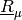 that is obtained via the zeta transform of the basic belief assignment
 , a solution of
the following optimization (linear programming) problem:
, a solution of
the following optimization (linear programming) problem:
which, because constants in the objective function do not influence the solution and because 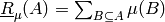, is equivalent to:
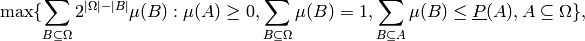
the version that is implemented.
We apply this to Example 2 from Hall & Lawry’s 2004 paper [1], which we also used for 'irm':
>>> pspace = PSpace('ABCD') >>> lprob = LowProb(pspace, lprob={'': 0, 'ABCD': 1, ... 'A': .0895, 'B': .2743, ... 'C': .2668, 'D': .1063, ... 'AB': .3947, 'AC': .4506, ... 'AD': .2959, 'BC': .5837, ... 'BD': .4835, 'CD': .4079, ... 'ABC': .7248, 'ABD': .6224, ... 'ACD': .6072, 'BCD': .7502}) >>> belfunc = lprob.get_outer_approx('lpbelfunc') >>> belfunc.is_completely_monotone() True >>> print(lprob) : 0.0 A : 0.0895 B : 0.2743 C : 0.2668 D : 0.1063 A B : 0.3947 A C : 0.4506 A D : 0.2959 B C : 0.5837 B D : 0.4835 C D : 0.4079 A B C : 0.7248 A B D : 0.6224 A C D : 0.6072 B C D : 0.7502 A B C D : 1.0 >>> print(belfunc) : 0.0 A : 0.0895 B : 0.2743 C : 0.2668 D : 0.1063 A B : 0.3638 A C : 0.4079 A D : 0.28835 B C : 0.5837 B D : 0.44035 C D : 0.37355 A B C : 0.7248 A B D : 0.6224 A C D : 0.6072 B C D : 0.7502 A B C D : 1.0 >>> print(lprob.mobius) : 0.0 A : 0.0895 B : 0.2743 C : 0.2668 D : 0.1063 A B : 0.0309 A C : 0.0943 A D : 0.1001 B C : 0.0426 B D : 0.1029 C D : 0.0348 A B C : -0.0736 A B D : -0.0816 A C D : -0.0846 B C D : -0.0775 A B C D : 0.1748 >>> print(belfunc.mobius) : 0.0 A : 0.0895 B : 0.2743 C : 0.2668 D : 0.1063 A B : 0.0 A C : 0.0516 A D : 0.09255 B C : 0.0426 B D : 0.05975 C D : 0.00045 A B C : 0.0 A B D : 1.11022302463e-16 A C D : 0.0 B C D : 0.0 A B C D : 0.01615 >>> sum(lprev for (lprev, uprev) ... in (lprob - belfunc).itervalues())/(2 ** len(pspace) ... ) 0.00991562...
Note
This algorithm is not invariant under permutation of the possibility space or changes in the LP-solver: there may be a nontrivial convex set of optimal solutions.
Warning
The lower probability must be defined for all events. If needed, call extend() first.
- get_precise_part()¶
Extract the precise part and its relative weight.
Every coherent lower probability can be written as a unique convex mixture of an additive ‘precise’ part
and an ‘imprecise’ part
that is zero on singletons.
We return the tuple 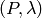, where is a
Prob. In case 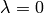 we return
the tuple (None, 0).>>> pspace = PSpace('abc') >>> lprob = LowProb(pspace, number_type='fraction') >>> event = lambda A: Event(pspace, A) >>> lprob.set_lower(event('a'), '1/8') >>> lprob.set_lower(event('b'), '1/7') >>> lprob.set_lower(event('c'), '1/6') >>> lprob.set_lower(event('ac'), '3/8') >>> lprob.extend() >>> print(lprob) : 0 a : 1/8 b : 1/7 c : 1/6 a b : 15/56 a c : 3/8 b c : 13/42 a b c : 1 >>> prob, coeff = lprob.get_precise_part() >>> print(prob) a : 21/73 b : 24/73 c : 28/73 >>> coeff Fraction(73, 168)
Warning
The lower probability must be defined for all singletons. If needed, call extend() first.
- is_completely_monotone()¶
Checks whether the lower probability is completely monotone or not.
Warning
The lower probability must be defined for all events. If needed, call extend() first.
>>> lpr = LowProb( ... pspace='abcd', ... lprob={'ab': '0.2', 'bc': '0.2', 'abc': '0.2', 'b': '0.1'}) >>> lpr.extend() >>> print(lpr) : 0 a : 0 b : 1/10 c : 0 d : 0 a b : 1/5 a c : 0 a d : 0 b c : 1/5 b d : 1/10 c d : 0 a b c : 1/5 a b d : 1/5 a c d : 0 b c d : 1/5 a b c d : 1 >>> print(lpr.mobius) : 0 a : 0 b : 1/10 c : 0 d : 0 a b : 1/10 a c : 0 a d : 0 b c : 1/10 b d : 0 c d : 0 a b c : -1/10 a b d : 0 a c d : 0 b c d : 0 a b c d : 4/5 >>> lpr.is_completely_monotone() # (it is in fact not even 2-monotone) False
>>> lpr = LowProb( ... pspace='abcd', ... lprob={'ab': '0.2', 'bc': '0.2', 'abc': '0.3', 'b': '0.1'}) >>> lpr.extend() >>> print(lpr) : 0 a : 0 b : 1/10 c : 0 d : 0 a b : 1/5 a c : 0 a d : 0 b c : 1/5 b d : 1/10 c d : 0 a b c : 3/10 a b d : 1/5 a c d : 0 b c d : 1/5 a b c d : 1 >>> print(lpr.mobius) : 0 a : 0 b : 1/10 c : 0 d : 0 a b : 1/10 a c : 0 a d : 0 b c : 1/10 b d : 0 c d : 0 a b c : 0 a b d : 0 a c d : 0 b c d : 0 a b c d : 7/10 >>> lpr.is_completely_monotone() True
- is_n_monotone(monotonicity=None)¶
Given that the lower probability is (n-1)-monotone, is the lower probability n-monotone?
Note
To check for n-monotonicity, call this method with monotonicity=xrange(n + 1).
Note
For convenience, 0-montonicity is defined as empty set and possibility space having lower probability 0 and 1 respectively.
Warning
The lower probability must be defined for all events. If needed, call extend() first.
Warning
For large levels of monotonicity, it is slightly more efficient to call is_bba_n_monotone() on mobius.
- classmethod make_extreme_n_monotone(pspace, monotonicity=None)¶
Yield extreme lower probabilities with given monotonicity.
Warning
Currently this doesn’t work very well except for the cases below.
>>> lprs = list(LowProb.make_extreme_n_monotone('abc', monotonicity=2)) >>> len(lprs) 8 >>> all(lpr.is_coherent() for lpr in lprs) True >>> all(lpr.is_n_monotone(2) for lpr in lprs) True >>> all(lpr.is_n_monotone(3) for lpr in lprs) False >>> lprs = list(LowProb.make_extreme_n_monotone('abc', monotonicity=3)) >>> len(lprs) 7 >>> all(lpr.is_coherent() for lpr in lprs) True >>> all(lpr.is_n_monotone(2) for lpr in lprs) True >>> all(lpr.is_n_monotone(3) for lpr in lprs) True >>> lprs = list(LowProb.make_extreme_n_monotone('abcd', monotonicity=2)) >>> len(lprs) 41 >>> all(lpr.is_coherent() for lpr in lprs) True >>> all(lpr.is_n_monotone(2) for lpr in lprs) True >>> all(lpr.is_n_monotone(3) for lpr in lprs) False >>> all(lpr.is_n_monotone(4) for lpr in lprs) False >>> lprs = list(LowProb.make_extreme_n_monotone('abcd', monotonicity=3)) >>> len(lprs) 16 >>> all(lpr.is_coherent() for lpr in lprs) True >>> all(lpr.is_n_monotone(2) for lpr in lprs) True >>> all(lpr.is_n_monotone(3) for lpr in lprs) True >>> all(lpr.is_n_monotone(4) for lpr in lprs) False >>> lprs = list(LowProb.make_extreme_n_monotone('abcd', monotonicity=4)) >>> len(lprs) 15 >>> all(lpr.is_coherent() for lpr in lprs) True >>> all(lpr.is_n_monotone(2) for lpr in lprs) True >>> all(lpr.is_n_monotone(3) for lpr in lprs) True >>> all(lpr.is_n_monotone(4) for lpr in lprs) True >>> # cddlib hangs on larger possibility spaces >>> #lprs = list(LowProb.make_extreme_n_monotone('abcde', monotonicity=2))
- classmethod make_random(pspace=None, division=None, zero=True, number_type='float')¶
Generate a random coherent lower probability.
- mobius¶
The mobius transform of the assigned unconditional lower probabilities, as SetFunction.
See also
- improb.setfunction.SetFunction.get_mobius()
- Mobius transform calculation of an arbitrary set function.
- improb.lowprev.belfunc.BelFunc
- Belief functions.
- set_function¶
The lower probability as SetFunction.
Footnotes
| [1] | (1, 2, 3, 4) Jim W. Hall and Jonathan Lawry: Generation, combination and extension of random set approximations to coherent lower and upper probabilities Reliability Engineering & System Safety, 85:89-101, 2004. |